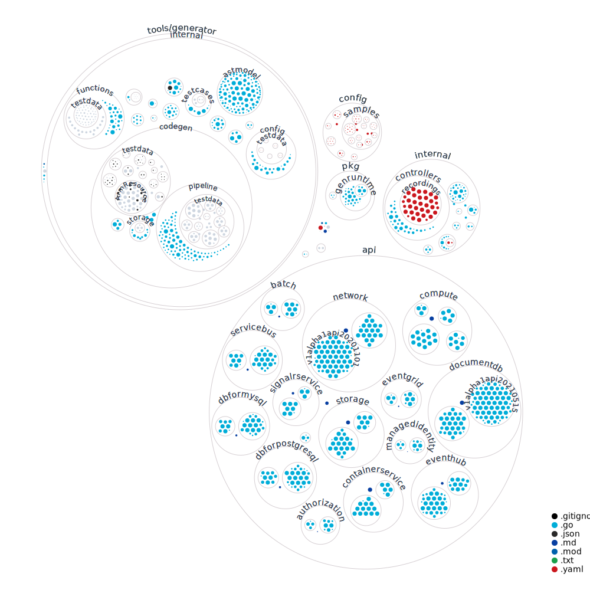

Contributing to Azure Service Operator v2 #
Related pages #
Developer setup (with VS Code) #
This is the recommended setup, especially if you are using Windows as your development platform.
This repository contains a devcontainer configuration that can be used in conjunction with VS Code to set up an environment with all the required tools preinstalled.
If you want to use this:
-
Make sure you have installed the prerequisites to use Docker, including WSL if on Windows.
-
Install VS Code and the Remote Development extension (check installation instructions there).
-
Run the VS Code command (with
Ctrl-Shift-P):Remote Containers: Clone Repository in Container Volume...Note: in Windows, it is important to clone directly into a container instead of cloning first and then loading that with the
Remote Containersextension, as the tooling performs a lot of file I/O, and if this is performed against a volume mounted in WSL then it is unusably slow.To complete the clone:
- Select “
GitHub”. - Search for “
Azure/azure-service-operator”. - Choose either of the following options about where to create the volume.
- The window will reload and run the
Dockerfilesetup. The first time, this will take some minutes to complete as it installs all dependencies. - Run
git submodule initandgit submodule update
- Select “
-
To validate everything is working correctly, you can open a terminal in VS Code and run
task -l. This will show a list of alltaskcommands. Runningtaskby itself (ortask default) will run quick local pre-checkin tests and validation.
Without VS Code #
Option 1: Dockerfile #
The same Dockerfile that the VS Code devcontainer extension uses can also be used outside of VS Code; it is stored in the root .devcontainer directory and can be used to create a development container with all the tooling preinstalled:
$ docker build $(git rev-parse --show-toplevel)/.devcontainer -t asodev:latest
… image will be created …
$ # After that you can start a terminal in the development container with:
$ docker run --env-file ~/work/envs.env -v $(git rev-parse --show-toplevel):/go/src -w /go/src -u $(id -u ${USER}):$(id -g ${USER}) --group-add $(stat -c '%g' /var/run/docker.sock) -v /var/run/docker.sock:/var/run/docker.sock --network=host -it asodev:latest /bin/bash
It is not recommended to mount the source like this on Windows (WSL2) as the cross-VM file operations are very slow.
Option 2: ./dev.sh #
If you are using Linux, instead of using VS Code you can run the dev.sh script in the root of the repository. This will install all required tooling into the hack/tools directory and then start a new shell with the PATH updated to use it.
Directory structure of the operator #

Running integration tests #
Basic use: run task controller:test-integration-envtest.
Record/replay #
The task controller:test-integration-envtest runs the tests in a record/replay mode by default, so that it does not touch any live Azure resources. (This uses the go-vcr library.) If you change the controller or other code in such a way that the required requests/responses from ARM change, you will need to update the recordings.
To do this, delete the recordings for the failing tests (under {test-dir}/recordings/{test-name}.yml), and re-run controller:test-integration-envtest. If the test passes, a new recording will be saved, which you can commit to include with your change. All authentication and subscription information is removed from the recording.
To run the test and produce a new recording you will also need to have set the required authentication environment variables for an Azure Service Principal: AZURE_SUBSCRIPTION_ID, AZURE_TENANT_ID, AZURE_CLIENT_ID, and AZURE_CLIENT_SECRET. This Service Principal will need access to the subscription to create and delete resources.
If you need to create a new Azure Service Principal, run the following commands:
$ az login
… follow the instructions …
$ az account set --subscription {the subscription ID you would like to use}
Creating a role assignment under the scope of "/subscriptions/{subscription ID you chose}"
…
$ az ad sp create-for-rbac --role contributor --name {the name you would like to use}
{
"appId": "…",
"displayName": "{name you chose}",
"name": "{name you chose}",
"password": "…",
"tenant": "…"
}
The output contains appId (AZURE_CLIENT_ID), password (AZURE_CLIENT_SECRET), and tenant (AZURE_TENANT_ID). Store these somewhere safe as the password cannot be viewed again, only reset. The Service Principal will be created as a “contributor” to your subscription which means it can create and delete resources, so ensure you keep the secrets secure.
Running live tests #
If you want to skip all recordings and run all tests directly against live Azure resources, you can use the controller:test-integration-envtest-live task. This will also require you to set the authentication environment variables, as detailed above.
Running a single test #
By default task controller:test-integration-envtest and its variants run all tests. This is often undesirable as you may just be working on a single feature or test. In order to run a subset of tests, use:
TEST_FILTER=test_name_regex task controller:test-integration-envtest
Running the operator locally #
If you would like to try something out but do not want to write an integration test, you can run the operation locally in a kind cluster.
Before launching kind, make sure that your shell has the AZURE_SUBSCRIPTION_ID, AZURE_TENANT_ID, AZURE_CLIENT_ID, and AZURE_CLIENT_SECRET environment variables set. See above for more details about them.
Once you’ve set the environment variables above, run one of the following commands to create a kind cluster:
- Service Principal authentication cluster:
task controller:kind-create-with-service-principal. - AAD Pod Identity authentication enabled cluster (emulates Managed Identity):
controller:kind-create-with-podidentity.
You can use kubectl to interact with the local kind cluster.
When you’re done with the local cluster, tear it down with task controller:kind-delete.
Submitting a pull request #
Pull requests opened from forks of the azure-service-operator repository will initially have a skipped Validate Pull Request / integration-tests check which
will prevent merging even if all other checks pass. Once a maintainer has looked at your PR and determined it is ready they will comment /ok-to-test sha=<sha>
to kick off an integration test pass. If this check passes along with the other checks the PR can be merged.
Common problems and their solutions #
Error loading schema from root #
Full error:
error loading schema from root … open /azure-service-operator/v2/specs/azure-resource-manager-schemas/schemas/2019-04-01/deploymentTemplate.json no such file or directory
This git repo contains submodules. This error occurs when the submodules are missing, possibly because the repo was not cloned with --recurse-submodules.
To resolve this problem, run git submodule init and git submodule update and then try building again.